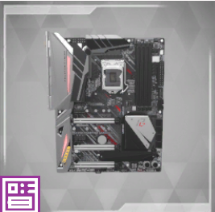

|
Home |
PC-Kompunenten |
Doku |
Quiz |
PC Zusammenbauen!
Gehäuse Auswahl
Das Gehäuse wird durch verschiedene Faktoren ausgewählt. Es kommt darauf an welchen Formfaktor das Motherboard hat und welche große andere Hardware ist. Darunter könnte eine AIO Wasserkühlung oder eine große Grafikkarte sein. Es ist wichtig sich immer über die Maß seiner Hardware schlau zumachen bevor man einen voreiligen Kauf tätigt.
|
Je nach Formformfaktor eines Motherboard enscheidet sich welches Gehäuse richtig wäre zbs. mit einem ATX-E Motherboard sucht man kein Gehäuse welches nur für Mini-ITX ist. |
Für unser Beispiel Bauen wir einen Gaming PC.


|
Corsair Obsidian Series 1000D Der Grund warum wir uns für das Corsair Obsidian Series 1000D enschieden haben ist weil das Case den richtigen Formfaktor hat (ATX-S) und da es kostengünstig und zudem guten Airflow bietet. |
Mainboard bestücken
|
Da wir unser Case ausgewählt haben geht es jetzt zum Thema Mainboard / Motherboard zu bestücken. Dazu nehmen wir zuerst unsere CPU / AMD Ryzen 5 Six Core 2600 und installieren ihm in unser AM4 Socket. Da müssen wir auf die rotation sprich installations Richtung des CPUs beachten. Wenn wenn die CPU Installiert ist nehmen wir uns die Wärmeleitpaste und streichen eine minimale Lage auf den CPU. |
 |

|
Wenn die Wärmeleitpaste aufgetragen wurde nehmen wir unseren CPU Kühler / bequiet Dark Rock PRO 4 und installieren die Halterung für den CPU Kühler. Danach setzen ihm mittig mit ruhiger Hand auf den CPU und schrauben ihn fest. Danach schließen wir ihn noch an den Strom an und sind fertig mit der Installation des CPU Kühlers. |
|
Da der CPU Kühler installiert wurde kann man sich jetzt der Festplatte bzw. der SSD (in unserem Fall die Corsair Force Series MP500 6´960GB) wenden und installiern. Zunächst werden wir auf unserem Mother board den M2. Slot für NVME.SDDs suchen und gucken welchen Formfaktor unser SSD unterstützt wird. In unserem Fall wird jeder Formfaktor von den NVME SSDs unterstützt. Um die SSD zu installieren müssen wir die Feststellschraube der Slots enfernen und die SSD einfach dort reinzusliden. Die SSD wird wenn sie im Slot sitzt leicht nach oben ragen. Einfach einschrauben und damit ist sie installiert. Nachher sprich wenn der PC zusammengebaut ist sollte im Festplatten Manager oder im Diskpart die Festplatte formatiert und eingerichtet werden um sie nutzen zu können. |

|

|
In unserem nächsten Schritt werden wir uns den RAM vornehmen. In unserem Fall haben wir (2x) Corsair Vengeance PRO RGB 8GB DIMMs mit 4700Mhz. Die Installation von RAM ist ganz simple. Zuerst gucken wir auf die rechte obere Seite des Motherboards und sehen 4 Freie Slots für Arbeitsspeicher. Unsere Mother board hat 2 Controller für jewals 2Slots. Zunächst öffnen wir oben und unten die Clips für den RAM auf den Slots: 1. und 3. (installation auch auf Slot 2. und 4. möglich) und nehmen uns unseren Arbeitsspeicher und sliden den einfach in die Slots. Dann schließen wir noch die Clips und fertig ist die Installation. |
|
Jetzt nehmen wir uns das Netzteil / PowerSupply (PSU) vor. Zunächst gibt es 2 Arten von Netzteilen. Modular und NON-Modular. Der Unterschied zwischen Modular und NON-Modular ist das ein NON-Modulares Netzteil feste Kabel hat und ein Modulares Netzteil kann Kabel mit vorgegebenen Slots einfach einklippen. In unserm Falle haben wir ein Modulares Netzteil ein Cooler Master Master Watt Maker 1200Watt MIJ. Um unser Netzteil zu installieren werden wir an unserem Gehäuse den Monatage Platz für das Netzteil suchen. Dies liegt meist hinten am unterem Ende des Gehäuses. Bei unserem Gehäuse müssen wir den die Halterung für das Netzteil abschrauben um das Netzteil installieren / festschrauben zu können. Wenn das Netzteil installiert ist müssen wir jetzt die richtigen Kabel installieren und legen. |

|